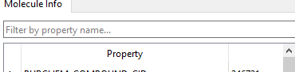
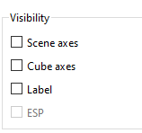
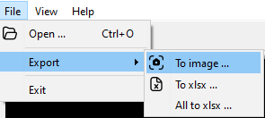
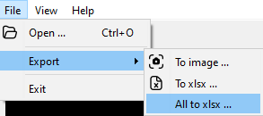

Molecule Viewer 使用说明
版本：0.4.0
1. 简介
Molecule Viewer 是一款专业的分子结构可视化与属性分析工具，专为科研工作者、教育工作者及开发者设计，致力于为化学与生命科学领域的数据探索与研究提供高效支持。
2. 功能列表
- 支持加载 SDF 格式文件，并逐一展现分子化合物的空间结构
- 支持球棒模型显示
- 支持化学键旋转方向可视化
- 支持查看分子属性及属性值
- 支持复制属性值
- 支持属性过滤器进行筛选与过滤
- 支持控制标签和坐标系统的显示或隐藏
- 支持按索引跳转分子结构
- 支持导出属性为 CSV 与 Excel
- 支持导出分子可视化图像（JPG、PNG、TIFF）
- '相似性搜索'功能模块，支持通过分子指纹在本地数据中检索相似结构或特征的分子化合物；
- 支持六种分子指纹类型，包括Morgan、Topological Torsion、Atom Pair、MACCS Keys、Avalon 和 RDKit；
- 支持同一个目标分子应用不同分子指纹，方便各维度进行检索对比；
- 支持用户动态调整指纹计算参数和筛选过滤参数；
- 增加指纹计算前的分子一致性处理逻辑，避免异常结构影响结果
- 支持'多视口分子可视化'组件，支持同步展示多个分子，方便做结构对比;
- 支持新版本检查功能
3. 准备条件
3.1 硬件要求
- 内存：最低 8G，推荐 16G
- 硬盘：最低 32G
- 显卡：主板集成显卡即可,独立显卡更好
3.2 操作系统
支持 Windows 10 64 位，不支持 Windows 7 及其他非 Windows 系统。
3.3 网络要求
仅在检查更新时需要连接互联网。
4. 软件安装
4.1 解压安装压缩包
从网站下载安装压缩包(zip格式)到本地，然后解压出安装程序，程序名为molviewersetup.exe
4.2 启动安装程序
双击安装程序，开始进行安装。
安装目标路径，尽量避免空格和非英文字符
建议勾选
此环节若要取消，可单击右下角"Cancel"按钮
5. 使用说明
5.1 启动运行
解压后直接双击程序启动，会显示启动界面及进度条。

首次启动会稍微多些时间，如果双击程序后未看到界面，稍等一下即可。
启动成功后进入主界面：
5.2 主界面布局说明
- 1：程序菜单
- 2：工具栏（打开文件、导出图片、导出属性、帮助）
- 3：主窗口（3D 可视化、标签、坐标系统）
- 4：分子属性信息选项卡
- 5：属性过滤器
- 6：属性信息表
- 7：导航按钮
- 8：可见性参数
- 9：状态栏（操作信息、文件名、索引/数量、版权信息）
5.3 打开数据文件
通过菜单 File → Open 或快捷键 Ctrl+O 选择 SDF 文件。
5.4 工具栏功能
从左至右：打开文件、导出图片、导出属性、帮助
5.5 主窗口展示
展现分子结构可视化、标签和坐标系统。

5.6 属性分析

支持属性悬停查看、双击复制、右键菜单功能。

5.7 属性过滤器
通过输入关键字进行属性名称过滤。
5.8 分子导航
支持首个、上一个、跳转到指定、下一个、最后一个，支持索引输入跳转。
5.9 可见性控制
控制 Scene Axes（方向参考轴）和 Cube Axes（立方体坐标轴）的显示或隐藏。
5.10 图片导出
菜单路径：File → Export → To image，所见即所得。
支持 JPG、PNG、TIFF 格式。
也可直接使用工具栏按钮：
5.11 属性导出
菜单路径：File → Export → To xlsx，导出当前分子的全部属性。

支持的格式为 xlsx。
也可直接使用工具栏按钮：

注意：只导出 SDF 文件中的属性，计算属性不包含在内。
5.12 批量导出
菜单路径：File → Export → All to xlsx，导出全部分子数据。
5.13 全屏切换
菜单路径：View → Full screen，快捷键 F11
5.14 更新检查
支持自动与手动检查更新
程序启动过程中自动检查当前是否有新版本。
用户也可以在：Help → Check update这个菜单项手动检查更新。

注意：当前程序迭代频繁，持续增加新特性，因此自动检查暂时不能关闭。
6 相似性检索
基于目标分子，在本地数据文件范围内按相似性匹配其他分子化合物，并生成相似性热力图
6.1 启动检索
当前已经打开数据文件，并定位到目标分子索引位置
用户点击菜单"Retrieval"->"Similarity ..."，或点击工具栏上"Similarity"按钮（如下）
打开检索对话框：
a. 检索对话框布局说明
- 1：数据源: "LocalFile"为本地SDF文件，"PubChem Online"为远程NIH PubChem数据库（仅Pro版本支持）
- 2：指纹设置区域
- 3：检索结果过滤器
- 4：检索结果列表
- 5：相似性热力图
注意： 主界面必须打开SDF数据文件，并定位到目标分子的索引位置。
b. 数据源设置说明
- 1："LocalFile": 为本地SDF文件
- 2："PubChem Online"为远程NIH PubChem数据库（仅Pro版本支持）
c. 指纹参数设置说明
- 1：指纹类型: 点击下拉框选择期望的指纹类型，当前支持Morgan、Topological Torsion、Atom Pair、MACCS Keys、Avalon 和 RDKit一共六种分子指纹。
- 2：指纹参数：指纹类型不同，其可配置参数也不同，请见下方各图：
-
Morgan
-
Topological Torsion
-
Atom Pair
-
MACCS
无 -
Avalon
-
RDK
注意： 鼠标悬停在某个参数上即可显示该参数的基本说明，若需更详细描述，请自行搜索相关专业解释。
d. 结果过滤器说明
- 1：Threshold: 相似性计算得分的最小值，低于此值的结果将被忽略。
- 2：Max Count：最大返回结果的数量。
注意：
e. 结果过滤器说明
6.2 启动计算
指纹类型及参数设定完毕后，点击对话框右下角"Apply"按钮后启动相似性搜索计算
a. 检索结果说明
检索结果分两部分，分别是相似性分子化合物列表和热力图，后续分别说明。
b. 检索结果（列表）说明
列表中展现符合条件的分子化合物属性列表，所有属性均来自本地文件或NIH Pubchem数据
- 1：分子化合物属性列表: 第一行为目标分子，支持点击列头按该列属性值排序、调整列宽度和列顺序位置；
- 2：Show Conformers: 勾选分子化合物后，点击该按钮可启动多视口可视化，即同时查看多个分子构象对比（后续具体说明）；
- 3：Selected rows：提示用户当前选择了哪些行的分子；
- 4：Reset table: 重置表格，将表格恢复初始状态，用于用户调整了列顺序或排序后希望重置为最初顺序；
- 5：Export to excel: 将当前搜索结果表格中的分子化合物导出为Excel文件（仅支持xlsx格式）；
c. 检索结果（热力图）说明
热力图中展现符合条件的分子化合物与目标分子之间相似性程度大小
- 1：热力图标题: TANIMOTO（谷本函数）为计算策略，rdk为当前分子指纹类型；
- 2：分子化合物编码: 唯一编码，具体根据本地数据文件的分子属性记录，若选择了Pubchem Online数据源，则为CID；
- 3：分子化合物编码：同2
- 4：相似性热力图值: 数值为两两对应分子的相似性计算得分，一般而言分值越高，相似性越高；
- 5：图例: 从0.0开始，越接近1.0，颜色越深；
6.3 多视口分子构象可视化
多个分子构象在同一视图中做同步可视化，对分析和对比多个分子的构象有较好的视觉效果。
- 1：工具栏: 包含"同步视角"、"Label"、"Scene Axes"、"Cube Axes"、"联动动画"、"动画速率"和"重置视图"
- 同步视角: 勾选后，各分子构象的相机位和视角同步变化；
- Label: 勾选后，可视化界面显示分子基本信息标签；
- Scene Axes: 是否显示主场景坐标系统；
- Cube Axes: 是否显示Cube Axes坐标系统；
- 联动动画: 是否开启自动动画
- 动画速率: 动画变化速率，从左到右为由慢变快；
- 重置视图: 重置多视口相机位为初始位置。
- 2：主窗口
- 旋转：按下鼠标左键不放，同时移动鼠标，可操作相机360度任意旋转；
- 平移：按下鼠标中键（滚轮）不放，同时移动鼠标，可平移相机位；
- 缩放：滑动鼠标滚轮或按下鼠标右键不放，同时移动鼠标即可进行视图缩放，即调试相机与目标距离；
- 调整区域大小：在区域十字分割线上，按下鼠标左键不放，同时移动鼠标，动态调整上下左右四个区域的屏幕占比；
- 调整各分子视图位置：在任一分子视图标题上按下鼠标左键不放，同时移动鼠标，利用拖拽与目标分子视图交换位置；
其他操作
注意：